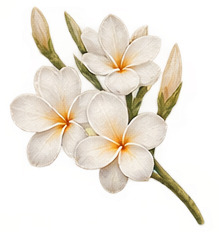
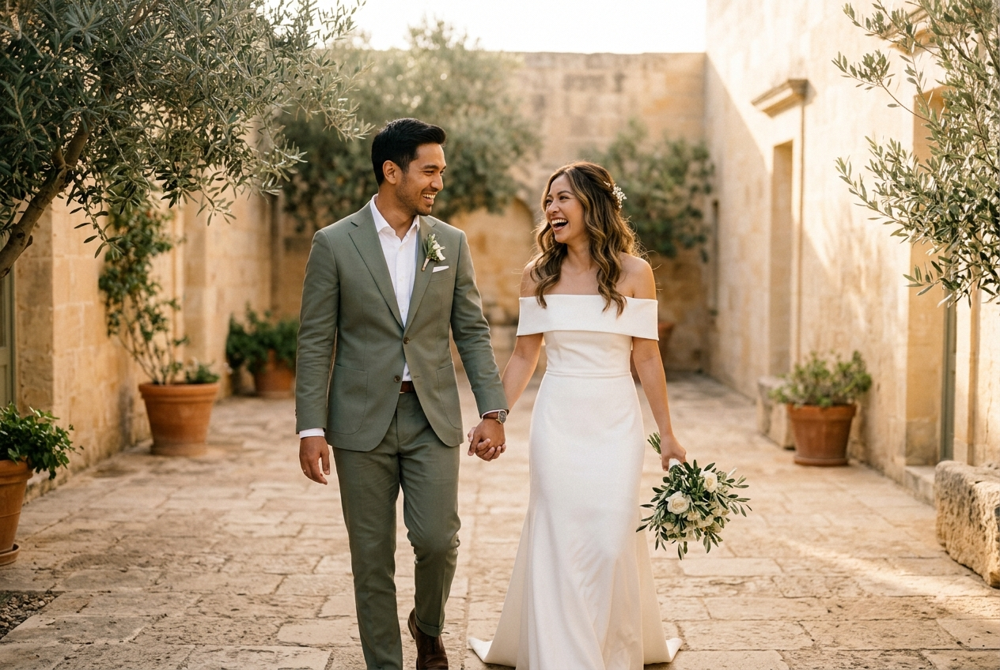
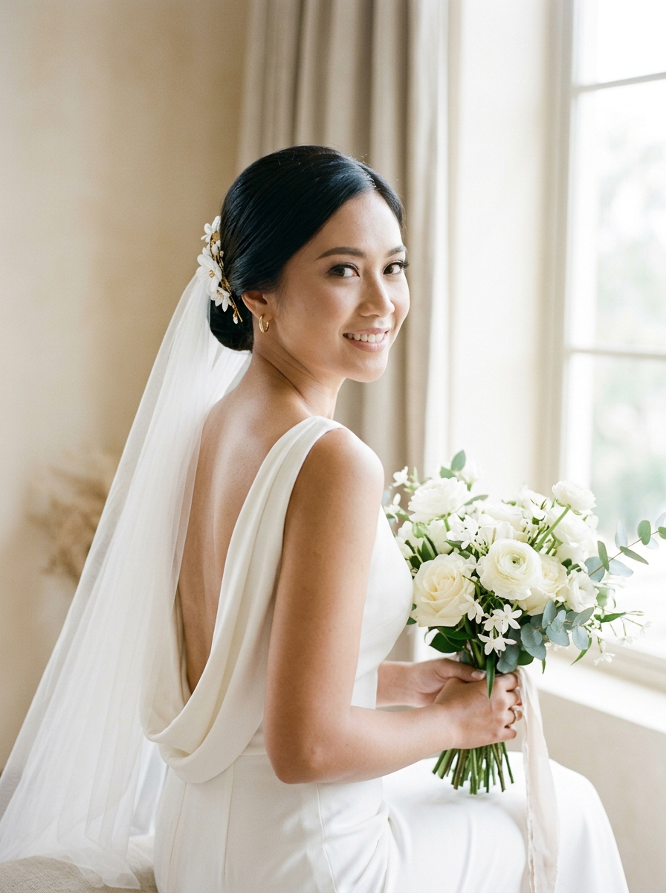
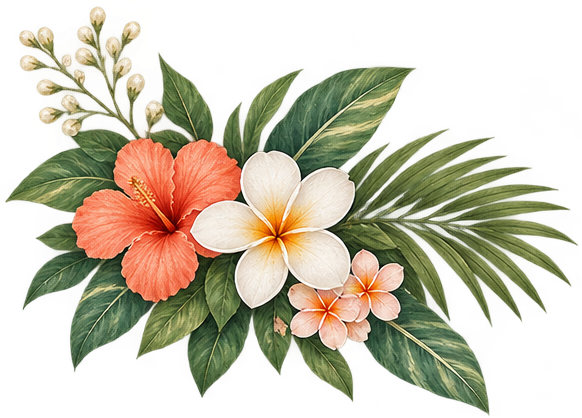
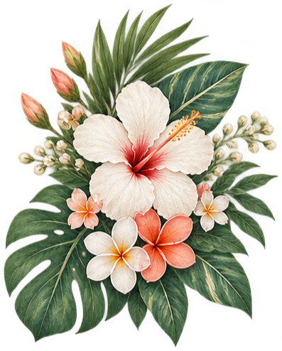

Raka & Sinta


"Dan di antara tanda-tanda (kebesaran)-Nya ialah Dia menciptakan pasangan-pasangan untukmu dari jenismu sendiri, agar kamu cenderung dan merasa tenteram kepadanya, dan Dia menjadikan di antaramu rasa kasih dan sayang."
Mempelai Bahagia
Dengan memohon rahmat Allah SWT, kami mengundang Anda untuk merayakan cinta kami:
Raka Pratama, S.T.
Putra pertama dari Bapak Bambang Pratama & Ibu Sri Rahayu

Sinta Maharani, S.Ds.
Putri kedua dari Bapak Hendra Wijaya & Ibu Dewi Sartika
Dermaga Kisah Kami
Tiga fase indah perjalanan cinta kami di bawah langit pantai
Pertemuan di Pesisir Senja
Sebuah perjumpaan tak sengaja di pesisir pantai pulau Dewata yang mengawali getaran rasa dan mengubah jalan takdir hidup kami selamanya.
Janji di Bawah Langit Pantai
Diiringi deburan ombak dan hangatnya lembayung senja, dua pemikiran menyatu dalam visi yang sama untuk saling melengkapi dan melangkah bersama.
Berlabuh Menuju Mahligai Abadi
Dengan restu kedua orang tua dan semesta, kami mengikrarkan janji suci pernikahan untuk mengarungi bahtera rumah tangga yang bahagia dan penuh berkah.
"Captured Moments by the Waves"
Rangkaian Acara
Jadwal prosesi pernikahan tepi pantai kami
Akad Nikah
Sabtu, 24 Mei 2025
Pukul 08.00 - 10.00 WITA
Ocean Pavilion, The Mulia Resort, Kawasan Sawangan, Nusa Dua, Bali
Resepsi Pernikahan
Sabtu, 24 Mei 2025
Pukul 16.00 – 20.00 WITA (Sunset Hour)
Beachside Grand Lawn, The Mulia Resort, Nusa Dua, Bali
Galeri Bahagia
Koleksi potret cinta kami di bawah langit pantai

Seaside Vow
The Bride
The Groom
Under the Golden Sunset
Tanda Kasih
Doa restu Anda merupakan karunia terindah bagi kami. Namun apabila hendak memberikan tanda kasih, Anda dapat menyalurkannya melalui:
Alamat Kirim Kado Fisik
Buku Tamu Pesisir
Sampaikan kehadiran serta doa restu bagi kami
Andi Saputra
24 Mei 2025Happy wedding Raka & Sinta! Semoga selalu dalam lindungan Allah SWT dan menjadi keluarga yang sakinah mawaddah warahmah selamanya.
Nadia & Dimas
24 Mei 2025Selamat menempuh hidup baru sahabatku tercinta! Semoga dilimpahi cinta dan kebahagiaan abadi di setiap langkah kalian!


Merupakan suatu kehormatan dan kebahagiaan bagi kami apabila Bapak/Ibu/Saudara/i berkenan hadir serta memberikan doa restu bagi lembaran baru hidup kami.
Wassalamu'alaikum Warahmatullahi Wabarakatuh
Kami yang berbahagia,
Raka & Sinta
© 2025 THE WEDDING OF RAKA & SINTA · ALL RIGHTS RESERVED